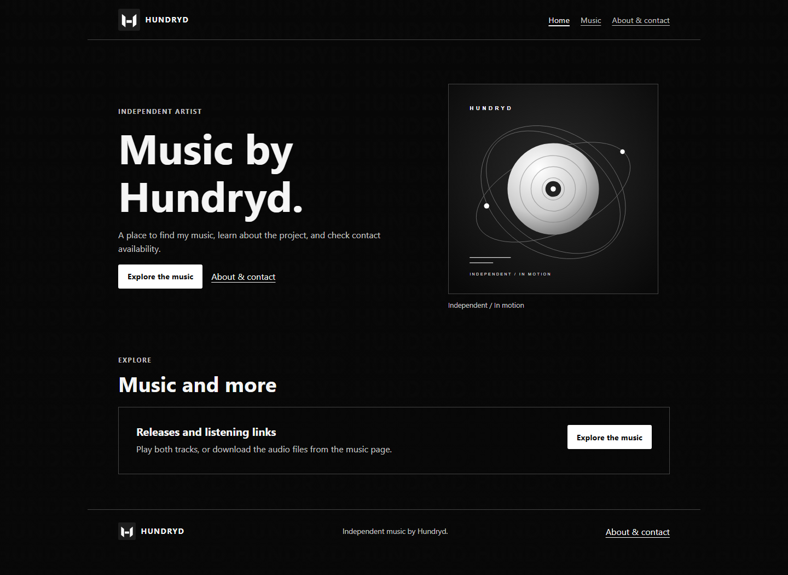
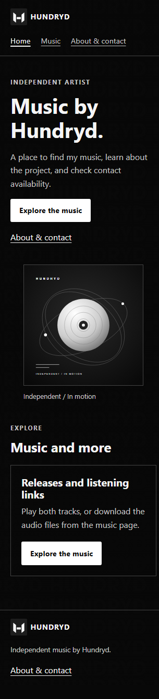

1. My project
- Who is it for?
- Listeners who want to find my music, people interested in working with me, and event organizers.
- What should visitors be able to do?
- Play or download my tracks, learn about the project, and use my contact form.
- My three pages
- Home introduces Hundryd. Music lists my tracks and players. About & Contact shares a little about me and explains that contact is not available yet.
- Repository
-
Open GitHub repository
https://github.com/Hundryd/GIT337-Module7-Capstone-Documentation-Starter - Published site
-
Open published website
https://hundryd.net/GIT337-Module7-Capstone-Documentation-Starter/
2. Requirement map
| Requirement | Where it is | Plan |
|---|---|---|
| Semantic pages and navigation | Header, navigation, main content, and footer on all three pages | New, shared layout |
| Design system | styles.css |
New, shared black-and-white styles |
| Figure and image | Home page cover, my logo and background on all pages | Use my supplied images, create monochrome cover art |
| Table | Music page track list | Added my two tracks and links from each row to its player |
| Form | About & Contact page | Required name, email, and message fields open a prefilled email to my address |
| SVG and shape | Cover art and decorative shapes | Added the monochrome orbital cover SVG to the Home page |
| Positioning and layering | Home page cover and feature card | New, adjusted for small screens |
| Effects and motion | Shared CSS hover, focus, and reduced-motion styles | New, reduced-motion support included |
| Testing and documentation | This evidence page | Adapted from the supplied checkpoint template |
3. Release checks
- Published pages and media: I checked all three live pages. Both waveform images and audio files load, both players loaded metadata and played with sound muted. Track 142 is about 2:47 and Track 38 is about 1:10.
- Small screen: All three published pages had no horizontal overflow in Edge at 320 CSS pixels and at 720 CSS pixels with device scale factor 2. The second viewport is equivalent to 200% zoom on a 1440 CSS-pixel display. I did not toggle the browser zoom control.
- Keyboard: The pages have skip links and visible focus. Keyboard activation of the skip links was checked on the local pages, pressing Tab focused the link and Enter moved to main.
- Contact: The updated local form checks required fields and email format, then asks the visitor's default email app to compose a message to me. The visitor must review and send it; the static site does not send messages by itself. This form has not been published.
- Still to do: Publish the updated form, test it with a configured email app, and verify delivery. Also complete the direct browser 200% zoom check, confirm permission to republish my supplied logo and background, formal HTML/CSS validation, and record and add my code-defense URL.
4. Three findings and what I did
| Finding | Repair or next step | Retest |
|---|---|---|
| The draft needed small-screen checks and a keyboard skip path. | I kept the cover responsive and added a skip link to the Home page. | All three live pages passed the 320px and 720px/DPR 2 overflow checks. I checked skip-link activation on the local pages. |
| The published Music page and tracks did not match my completed draft. | I published the track table, players, audio files, and waveforms. | Both waveforms loaded, both audio tracks loaded metadata and played in the published players. |
| My earlier contact form had no real destination. | I added required name, email, and message fields addressed to my email. | The local form passes native required-field and email-format checks. Test the email-app handoff and delivery after publishing. |
5. Screenshots


6. Sources and AI disclosure
Reference: MDN navigation, MDN tables, MDN forms, and MDN reduced motion.
Assets: I supplied the logo, background, and audio tracks. I still need to confirm permission to republish the logo and background. The orbital cover SVG was recreated with AI assistance, and the waveforms were generated from my audio.
AI disclosure:I used GitHub Copilot autocomplete while writing to speed up the development process. AI also assisted with creating the placeholder orbital cover SVG.